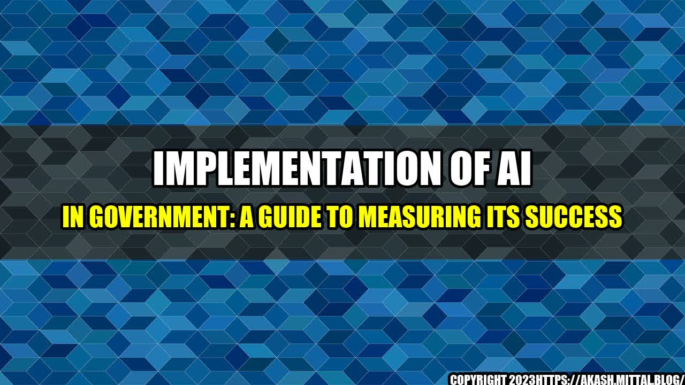

Implementation of AI in Government: A Guide to Measuring Its Success

Imagine a scenario where you can renew your driving license without standing in long queues or submit an application for a passport without physically travelling to the government office. Sounds too good to be true, right? But it can be a reality with the use of Artificial Intelligence (AI) in the government.
In recent years, the use of AI has been on the rise, and the government sector has not been left behind. AI can help rid government agencies of the traditional bureaucratic processes and help them go digital, making services more accessible, efficient, and affordable for taxpayers.
AI Implementation in Government
Several governments across the world have successfully integrated AI, realizing significant benefits, as evidenced by the following examples:
- In 2019, the Canadian government won the AI for Earth Innovation Award for its efforts in using AI to monitor sustainable agriculture and manage environmental impacts.
- The Indian government has recently launched an AI-powered chatbot, 'The Digital India Twitter Seva,' to provide a platform for citizens to get information about government policies and initiatives with ease.
- The Republic of Korea has developed an AI-based analysis model to support policymaking. The model accurately predicts the impact of government policies on economic and social dynamics.
- The United States government uses AI technology to automate processes such as reviewing legal documents and detecting fraudulent activities.
The Need for Measuring AI's Success
Despite the numerous benefits associated with the uptake of AI in government, measuring its success remains a challenge. Here are three reasons why measuring the success of AI implementation is critical:
- To determine if AI is achieving its intended purpose of improving government service delivery, including efficiency, cost-effectiveness, and accessibility.
- To justify continuing investment in AI-based systems by the government, taxpayers, and other stakeholders.
- To identify areas of improvement and adjust AI-based systems to increase their effectiveness and efficiency continually.
How to Measure AI Implementation Success in Government
When measuring the success of AI, the assessment should be based on several facets, including user experience, efficiency gains, and cost savings. Here are three ways to measure AI implementation success in government:
- Improve user experience: User experience is a critical success metric for AI implementation success in the government. User experience focuses on how users interact with the government, such as services or websites accessed through chatbots. In the government sector, the success metric for user experience should focus on speed, convenience, and the overall user satisfaction. To measure user experience, governments can use surveys, feedback forms, and analytics tools to measure user satisfaction and identify areas of improvement.
- Efficiency gains: One of the primary objectives of AI implementation in government is to improve efficiency. Governments can measure efficiency gains by comparing the time resources it took to complete a task before and after implementing an AI-based system. The efficiency gains will indicate if the AI-based process is faster, cheaper, and requires fewer resources to complete than the traditional process, which is a sign of success.
- Cost savings: Another critical success factor in AI implementation in government is cost savings. Governments can reduce the cost of service delivery by using AI-based systems that can function 24/7, provide accurate, and consistent service delivery without the need for additional human expertise. To measure cost savings, governments need to evaluate the cost of AI implementation vs. the cost of traditional service delivery, taking into account also development and maintenance costs.
Conclusion
The use of AI in government services has the potential to create a paradigm shift in service delivery, making them more accessible, efficient, and cost-effective for taxpayers. However, to achieve these benefits, governments must measure the success of AI implementation to ensure they are providing value for the taxpayers' money and identify opportunities for improvement. By incorporating user experience, efficiency gains, and cost savings metrics, governments can measure the success of AI implementation and justify continuing investments to taxpayers and other stakeholders.
References
Hashtags
- #artificialintelligence
- #government
- #digitaltransformation
- #efficiencygains
- #costsavings
Article Category
Artificial Intelligence
Curated by Team Akash.Mittal.Blog
Share on Twitter Share on LinkedIn